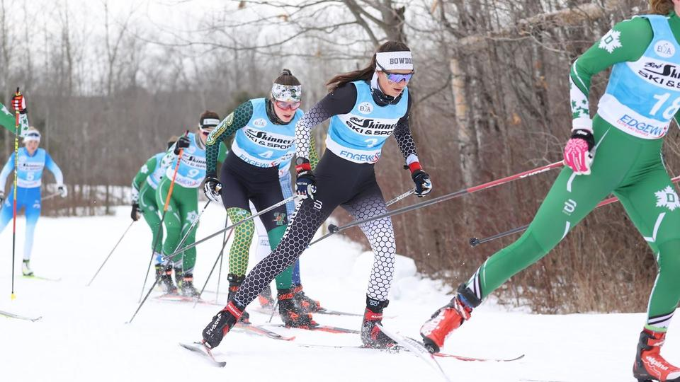

Are you an athlete considering any of the following schools?
Amherst, Williams, Tufts, Middlebury, Bates, Colby, Bowdoin, Hamilton, Middlebury, Wesleyan, Connecticut College, or
Trinity…
If so, you probably know that these schools make up the New England Small College Athletic Conference, or NESCAC.
Although the NESCAC operates as an NCAA Division III athletic conference, certain sports are exceptions to this (depending
on the school). For example, at Bates, cross country skiing (nordic) and squash are actually division I sports. The Bates
Nordic team even has rivalries with its Ivy League cousins Princeton and Dartmouth, who they compete with in world class
winter carnival races.

The "little Ivy” NESCAC schools are elite institutions, but more so academically than athletically. Unlike some of the
bigger division I cash cows, these division III colleges do not have binding athletic contracts. This has its pros and
cons, depending on what you are looking for. For example, once you are recruited to a NESCAC, your enrollment will not be
contingent on your athletic participation. If you happen to get injured, or decide to quit your sport, you won’t have any
major problems. On the other hand, no contract also means that DIII technically doesn't offer athletic scholarships. This
is mostly a technicality, however, since financial aid offers are obviously influenced by an applicant having strong pull
(wanted by athletic coaches). If the school really wants a student - for whatever reason - they will usually find a way to
make it work.
Although coaches are the people who will give you pull, the final decision is ultimately in the hands of admissions. To
understand how coaches interact with admissions, it is essential to get familiar with the student-athlete banding system.
The Banding Algorithm
Like many other schools, the NESCACs use a banding system to rank athletes for admission. Banding is a way to
quantitatively compare sports recruits by their academic standing, which is then combined with other factors. The band that
a student-athlete falls in will depend on the following: GPA, Board Scores, Class Rank (usually by percentile bracket), and
class rigor. Below is a detailed breakdown of a typical NESCAC banding hierarchy, with C bands being the lowest official
band.
| Band | GPA (UW) | Class Rank | SAT | ACT | Courses |
|---|---|---|---|---|---|
| A BAND | 3.9+ | Top 5% | 1450+ | 32-36 | Courses: 4+ APs with multiple 5s, all honors classes |
| B BAND | 3.7+ | Top 15% | 1300-1449 | 29-31 | Multiple AP Courses, some honors classes |
| C BAND | 3.2+ | Top 20% | 1200-1299 | 27-28 | Usually at least 1 AP, some honors classes |
Below C Band
Athlete applicants that fall below C band criterion can still get successfully recruited, although they will have to make
up for their academic shortcomings. Remember, your “pull” will also greatly depend on your athletic abilities, which can
make up for bad scores. As you move down from the A band tier, it is merely the uncertainty of admittance that increases. C
bands and others can still gain spots on a team, but this will largely depend on the luck of the draw (spots available and
needs of the school). In other words, coaches won’t be making room for you, but there might just happen to be some.
The Truth Above NESCAC Recruitment
The academic standards at NESCACs - especially the most selective ones - are extremely high. That being said, your
admittance to these schools is not determined by grades and test scores alone. There are plenty of capable students who,
for whatever reason, don’t have a flawless high school record. Likewise, plenty of smart and hardworking students struggle
with standardized testing. Recruiters and admissions officers know this, and select hundreds of these students every year.
Will students with lower grades and test scores be considered more risky? Yes, but that is generally the full extent of the
damage. If a student reduces their ‘risk level’ by supplementation, omission, and honest explanation, they can work around
their weaknesses. Additionally, applicants can prove that they are even worth a large risk, simply by honing in on
extraordinary strengths (your strength doesn’t need to be a junior olympic medal, it could even be your personality).
Your ideal strategy will be very particular, because where you choose to focus your efforts can drastically change your
results. There is only so much room on an application, but there is enough. For all tailored counseling, we recommend that
you reach out to our team at
NescacGuide@gmail.com.